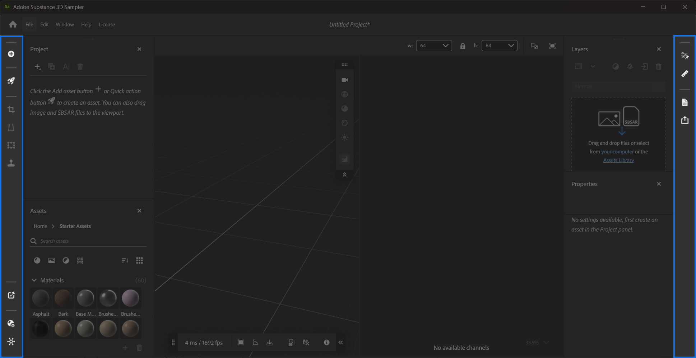

Sampler has two sidebars, the left sidebar and right sidebar.

The left sidebar holds:
For more information on the filters available from the left sidebar, go to Tools and Widgets.
The right sidebar holds the following panels when they are closed: